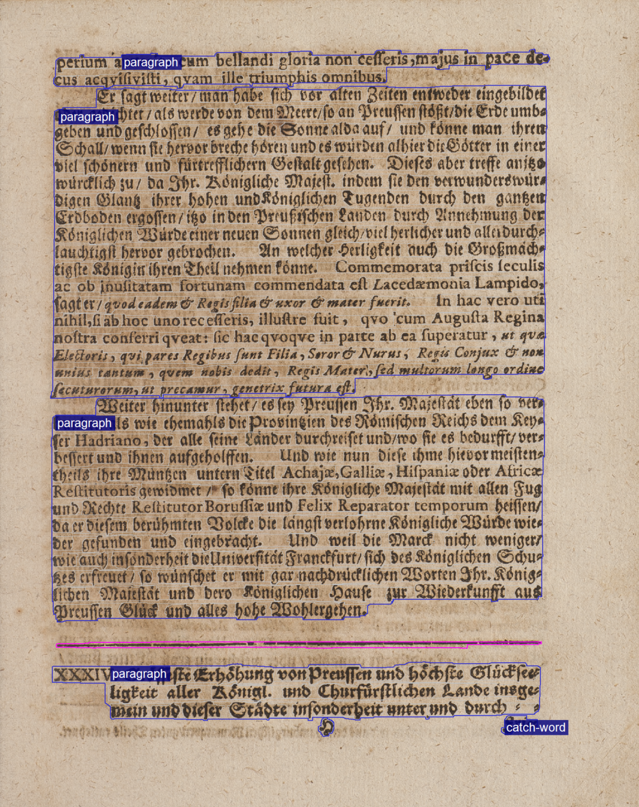
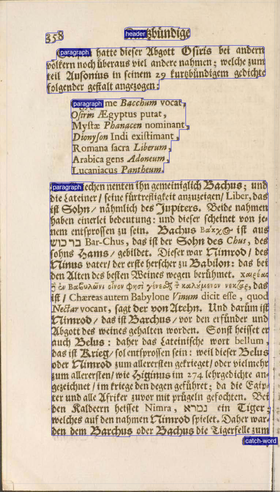
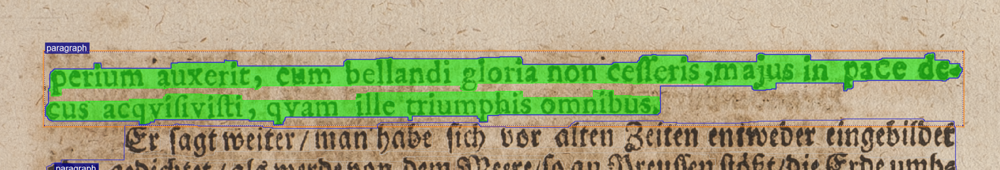
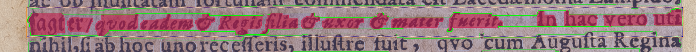

Sprache
Die Angabe der Sprache ist auf folgenden Ebenen möglich, die durch entsprechende Elemente repräsentiert werden.
| Ebene | Element | Attribute |
|---|---|---|
| Seite | Page | @primaryLanguage und @secondaryLanguage |
| Region | TextRegion | @primaryLanguage und @secondaryLanguage |
| Zeile | TextLine | @primaryLanguage |
| Wort | Word | @language |
Unterschieden wird zwischen der language (Sprache), primary language (Erst- oder Hauptsprache) und der secondary language (Zweit- oder Nebensprache). Language, primary language und secondary language sind Attribute (siehe Tabelle).
Die Werte der Attribute werden vom PAGE-XML-Schema vorgegeben. Sie entsprechen der ISO 639 zur Kennzeichnung von Sprachen. Angegeben wird nicht ein Kürzel, sondern die von der ISO normierte Sprachbezeichnung.
Merke: Da die Sprachangaben auf verschiedenen Ebenen möglich sind, gilt
folgende Regelung, untergeordnete Ebenen haben Vorrang vor der Angabe der höheren
Ebenen.
Page : Seite
<Page primaryLanguage="German" secondaryLanguage="Latin">Abbildung 1. Beispielseite mit zwei Sprachen. nn_auszug_1701_061.xml Merke: Auf dieser Seite werden nur zwei Sprachen verwendet, aus diesem Grund kann die Haupt- und Nebensprache (@primaryLanguage, @secondaryLanguage) angegeben werden.<Page primaryLanguage="German">Abbildung 2. Beispielseite mit vier Sprachen. zesen_assenat_1670_0382.xml Merke: Auf dieser Seite werden vier Sprachen (Deutsch, Latein, Griechisch, Hebräisch) verwendet. Die Hauptsprache ist Deutsch, sie wird angegeben. Die weiteren Sprachen werden auf der Wort-Ebene angegeben. Wenn keine Wortsegmentierung verfügbar ist, wird empfohlen, die Angabe der Sprache im METS-Datensatz (GT-labelling) anzugeben.
TextRegion : Region
<TextRegion primaryLanguage="Latin">Abbildung 3. Textregion mit einer Sprache. nn_auszug_1701_061.xml <TextRegion primaryLanguage="German" secondaryLanguage="Latin">Abbildung 4. Textregion mit zwei Sprachen. nn_auszug_1701_061.xml 
TextLine : Zeile
<TextLine primaryLanguage="Latin">Abbildung 5. TextLine mit einer Sprache. nn_auszug_1701_061.xml 
<TextLine primaryLanguage="Latin">Abbildung 6. TextLine mit zwei Sprachen. nn_auszug_1701_061.xml Merke: Im Beispiel ist zu sehen, dass sowohl deutschsprachige als auch lateinischsprachige Worte in der Zeile vorhanden sind. Es wird nur die Hauptsprache primaryLanguage angegeben. Die Angabe einer secondaryLanguage ist nicht möglich.
Word : Wort
<Word language="Latin">